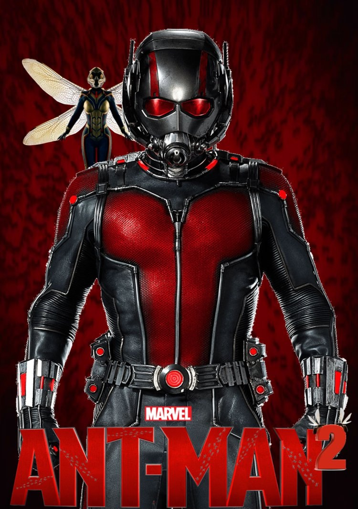
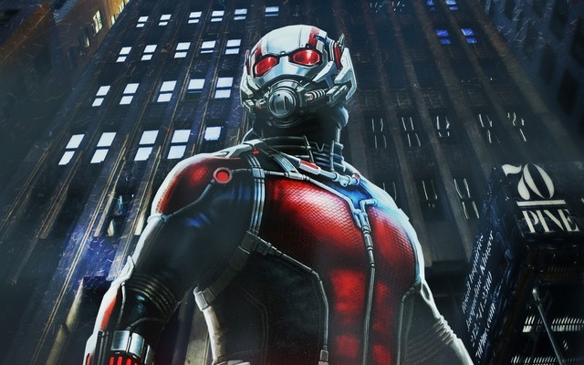

Пол Радд (англ. Paul Rudd; 6 квітня 1969) — американський актор, сценарист та продюсер. Найбільш відомий за роллю Скотта Ленґа (Людини-мурахи) – персонажа зі всесвіту Марвел.
Народився 6 квітня 1969 року в місті Пассаік, штат Нью-Джерсі, в єврейській сім'ї іммігрантів з Англії. Батько, Майкл, працював в галузі авіаперевезень, а мати, Глорія, менеджером з продажу на телестанції KSMO-TV. Пол виріс в місті Оверленд-Парк, штат Канзас. Після закінчення школи навчався в Канзаському університеті, де вивчав театральне мистецтво. Потім він став студентом Американської академії драматичних мистецтв і під час навчання три місяці займався в майстерні при Британській академії драми Оксфордського університету. Його наставником був відомий продюсер Майкл Кан. В Англії Радд також взяв участь у постановці вистави «Проклята поезія» в театрі «Глобус» — як продюсер і виконавець ролі Персі Біші Шеллі. Він також зіграв головного героя в «Гамлеті», поставленому Беном Кінгслі.
Пол дебютував в 1992 році на телебаченні в серіалі «Сестри». У 1995 році знявся у фільмі «Хелловін 6: проклін Майкла Маєрса». Серед інших картин за участю Пола Радда можна назвати «Ромео+Джульєта» (1996), «Дванадцята ніч» (1998), «Правила виноробів» (1999).
«Людина-мураха» (англ. Ant-Man) — американський супергеройський фільм, заснований на персонажах однойменного коміксу Marvel: Скотті Ленгу і Генку Піму. Продюсуванням займалась Marvel Studios, а розповсюдженням — Walt Disney Studios Motion Pictures. Це дванадцятий фільм кінематографічного всесвіту Marvel. Пейтон Рід виступив режисером, а Пол Радд і Адам МакКей — сценаристами. У фільмі знімалися — Пол Радд, Еванджелін Ліллі, Корі Столл, Боббі Каннавале, Майкл Пенья, Джуді Грір, Тіп «Ті Ай» Гарріс, Девід Дастмалчіан, Вуд Гарріс, Жорді Молья та Майкл Дуглас. За сюжетом фільму Скотт Ленг повинен допомогти захистити технологію костюму Людина-мураха доктора Піма і здійснити пограбування зі світовими наслідками.
Розробка «Людини-мурахи» почалася у квітні 2006 року з призначення режисером проєкту Едгара Райта за сценарієм Едгара Райта та Джо Корніша. У квітні 2011 року Райт і Корніш закінчили написання трьох чорнових сценаріїв, і у липні 2012 року Райт приступив до фільмування тестових сцен майбутньої стрічки. Препродакшн, який був призупинений з метою завершення Райтом зйомок фільму «Кінець світу», почався тільки в жовтні 2013 року. Кастинг розпочався у грудні 2013 із затвердження Пола Радда на роль Ленга. У травні 2014 року Райт покинув проєкт через творчі розбіжності. Наступного місяця його місце зайняв Пейтон Рід, а МакКей був найнятий дописувати сценарій. Основні фільмування пройшли між серпнем і груднем 2014 року у Сан-Франциско та агломерації Атланти. Фільм вийшов на екрани України 16 липня 2015 року.
У 1989 році вчений Генк Пім розробляє костюм, здатний зменшуватися і збільшуватися за допомогою «пімової частинки». Вчений відмовляє організації Щ. И. Т. налагодити масове виробництво таких костюмів і подає у відставку.
У наш час Генк відвідує свою компанію «PymTech», якою володіє колишній учень Піма, Даррен Крос. Там Генк бачить прототип костюма «Жовте жало», що забезпечує зміну розміру носія. Коли Крос говорить, що ним можна приховувати солдатів, засилати їх в тил і виконувати диверсії, він розуміє, що проєкт становить величезну загрозу.